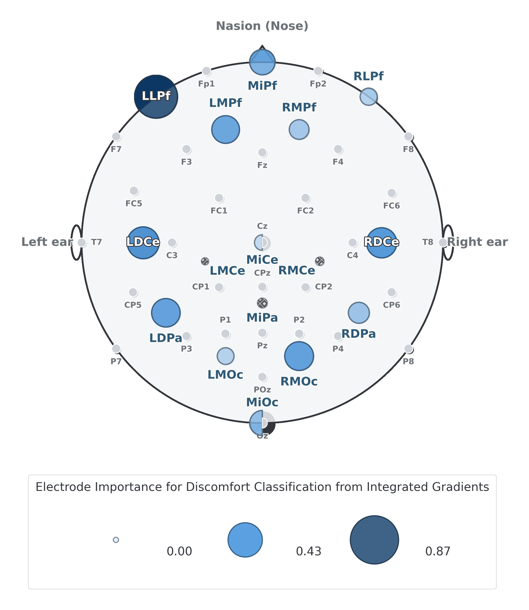
(a) Discomfort group (ERPVR)
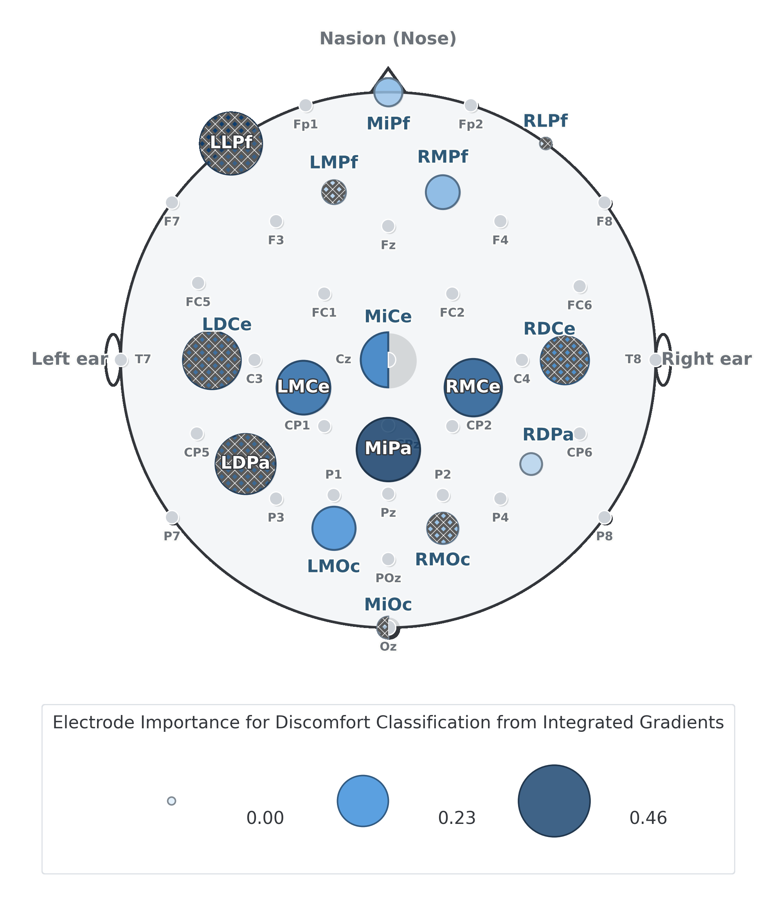
(b) No-discomfort group (ERPVR)
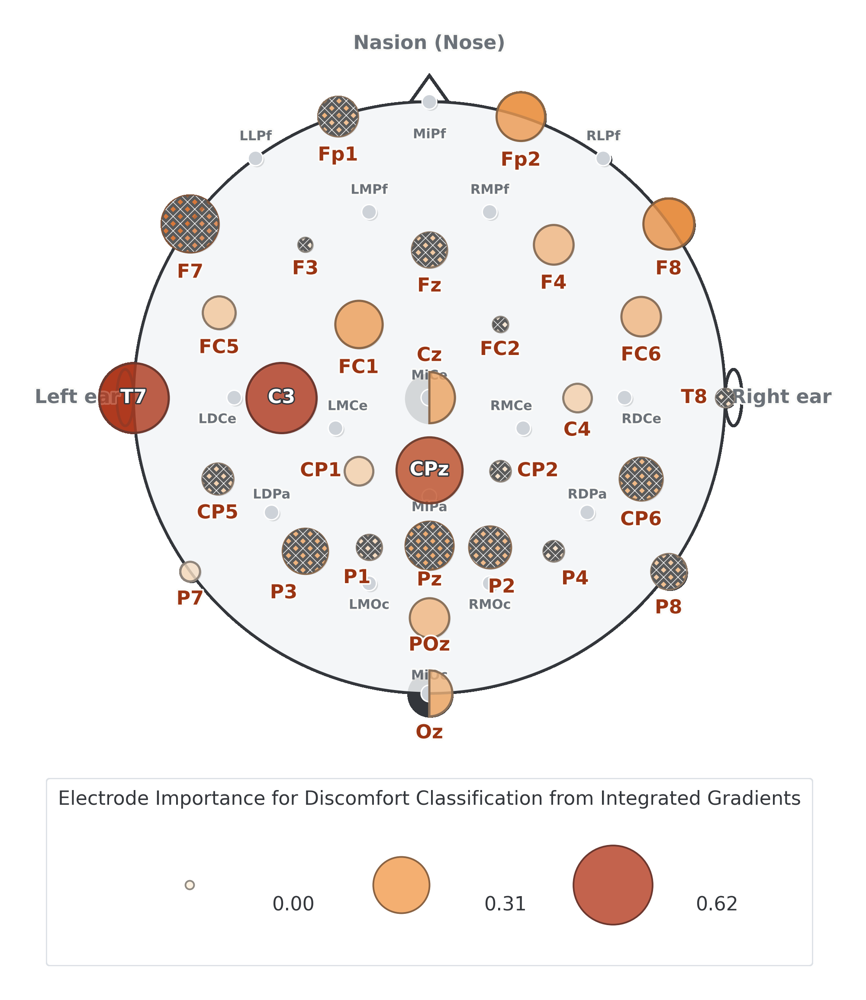
(c) High-discomfort group (VectionVR)
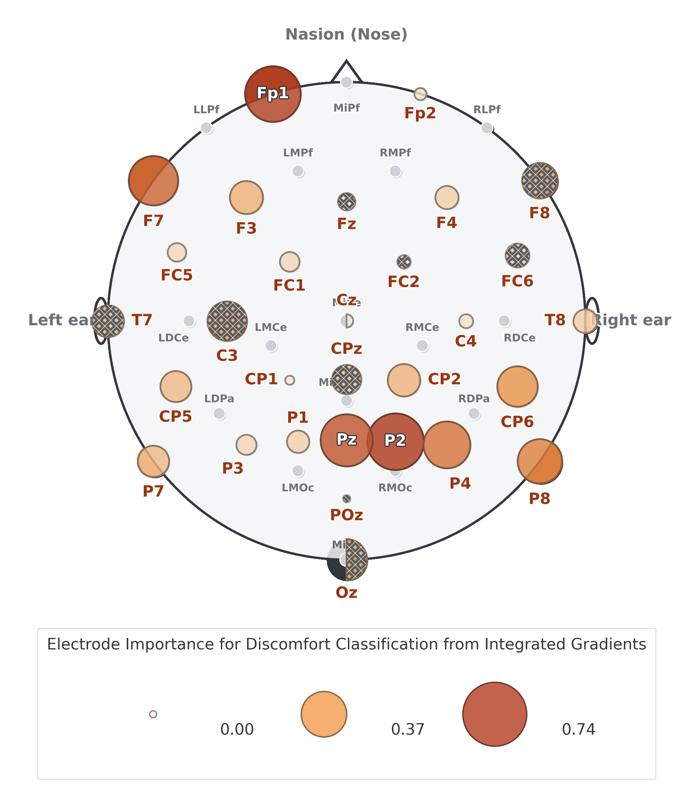
(d) Low-discomfort group (VectionVR)
Abstract
Uncomfortable sensations similar to motion sickness, called cybersickness, can develop when using Virtual Reality (VR) head-mounted displays. Cybersickness poses a hindrance to greater use of VR technology. Brain activity recorded using electroencephalogram (EEG) can be used to unintrusively detect cybersickness and the discomfort it causes. To intervene for mitigation, machine learning algorithms that can extract meaningful signals related to cybersickness discomfort from the rest of the brain data will be required. In this work, we determined which features in EEG data were most helpful for classifying cybersickness-related discomfort by building a framework with neural networks and interpretability maps. Using brain data from two separate auditory event-related potential (ERP) cybersickness user studies, we extracted which spatio-temporal EEG features (from sensor locations and time steps) were most important for discomfort classification. For the first dataset (n=29), across 120 runs of our framework with three different neural networks over multiple random seeds, the models consistently pointed to scalp locations in left frontal, midline central, and right parietal areas as most helpful in determining if EEG data belonged to someone who was experiencing cybersickness discomfort. Similar locations were also tagged in a second dataset (n=36), showing cross-dataset generalizability of our findings across time, VR stimulus, and participant sample. Early periods in the extracted ERP time windows, approximately between 80 and 260 milliseconds post-stimulus, were marked as important for model classification in both datasets. These results help clarify which tagged features can be used for cybersickness-related (and potentially other types of) discomfort classification with EEG in the future.
Motivation
Identifying patterns in EEG data for cybersickness-related discomfort
ERPVR [5] is a dataset of event-related potential (ERP) EEG data from a study in which participants viewed a stimulus designed to elicit cybersickness. Given the ERPVR dataset, the problem is twofold: 1) can we detect cybersickness-related discomfort in ERP data — very short time windows of 1 second, with only 800 ms after the ERP stimulus — and 2) if we can detect discomfort, are there any patterns in the ERP data that the ML models used to inform their predictions?
Approach
The NNILC framework
NNILC (Neural Network Interpretability with Leave-One-Subject-Out and subject-specific Calibration) is a model-agnostic framework that trains neural networks (in this work, EEGNet [1], EEG Conformer [2], and an ImageNet pre-trained EEG ViT [3]) with leave-one-subject-out evaluation, calibrates each model per subject, and extracts interpretability maps (integrated gradients [4], class activation) from models that classify a subject with greater than 75% accuracy. Running this across 120 configuration permutations and multiple random seeds for all models reveals which input data (EEG) features the models consistently rely on — and a cross-dataset pass verifies the identified patterns on an independent dataset.
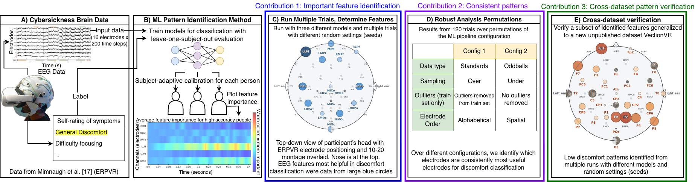
Contribution 1: identify important features from interpretability maps.
Contribution 2: show the patterns are consistent across 120 trials with various pipeline permutations.
Contribution 3: verify the patterns cross-dataset on VectionVR.
Result 1 · ERPVR: calibration & a consistent pattern
Subject-specific calibration, consistent patterns across subjects
Discomfort detection from very short ERP data is hard, especially when generalizing across people: under leave-one-subject-out evaluation, balanced accuracy is limited — above all for mixed-label subjects (~52–57%) — because EEG varies so much between individuals. NNILC therefore calibrates each model per subject, which boosts balanced accuracy for all three ERPVR participant groups, up to roughly 95.6% (discomfort group) and 89.6% (no-discomfort group) with the pretrained ViT. One point of care: many subjects carry only a single label, so naive calibration would overfit in the extreme — collapsing into always predicting that one label. To prevent this, the calibration training set is explicitly balanced: the missing label's data is drawn from other subjects, selected in PCA space via k-nearest-neighbors to the test subject's data. Interpretability maps are then extracted only from subjects classified with greater than 75% accuracy, so the maps reflect models that genuinely learned.
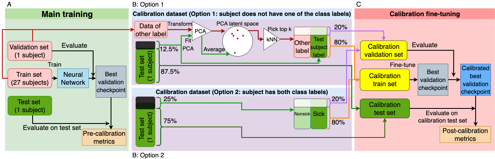
The key observation is what each of these models, calibrated to different subjects
and from different experiment runs, have in common: across
120 trials with various pipeline permutations, three architectures (EEGNet, EEG Conformer, pretrained
ViT), and multiple random seeds, the integrated gradient interpretability maps converge on overlapping electrode sets across
different high-accuracy subjects. For the discomfort group, LLPf had the
highest integrated gradients for all models and runs, usually followed by LDCe and
RDCe, with RMOc and LDPa also generally helpful. For the
no-discomfort group, centro-parietal locations (MiPa, LMCe,
RMCe, MiCe, LMOc) were most useful. That convergence, despite
every model being tuned to a different individual, argues the pattern reflects cybersickness-related
discomfort itself rather than any one subject, model, or calibration.
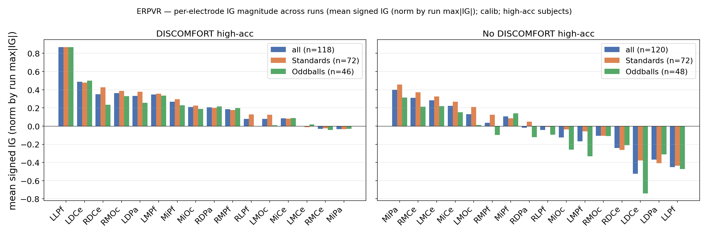
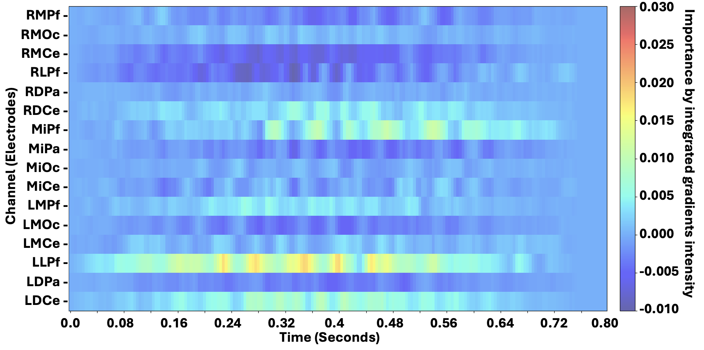
(a) EEG Conformer calibrated IGs
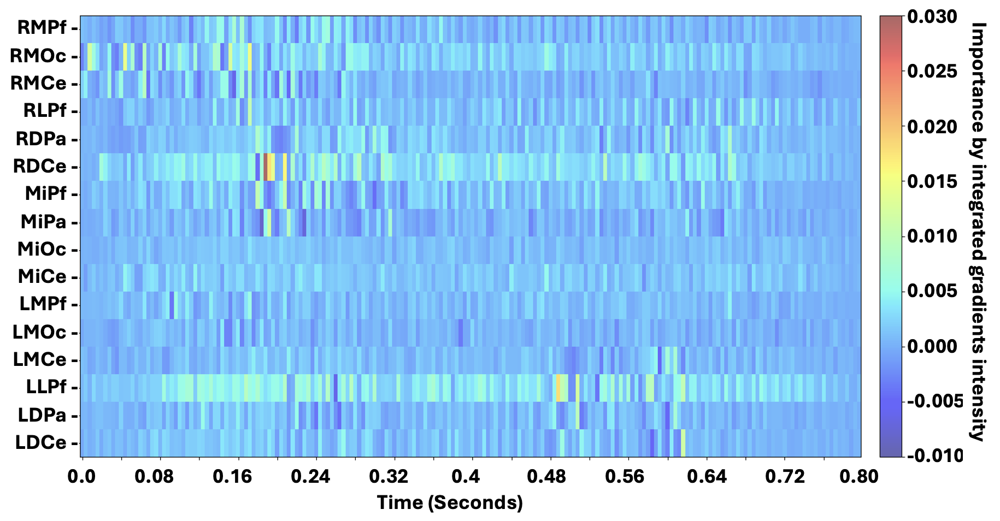
(b) Pre-trained EEG ViT calibrated IGs
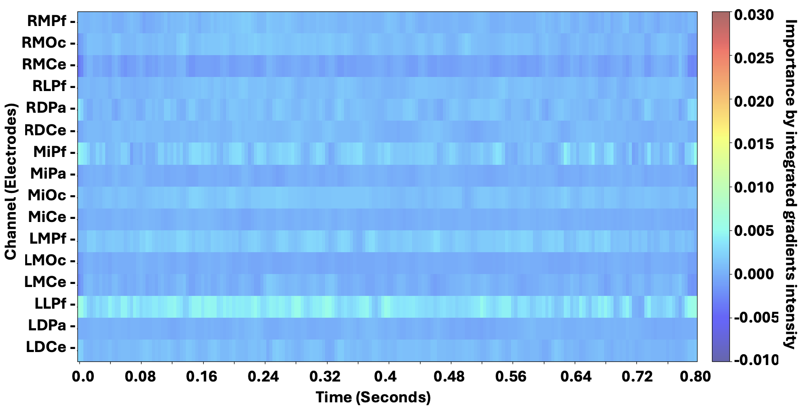
(c) EEGNet calibrated IGs
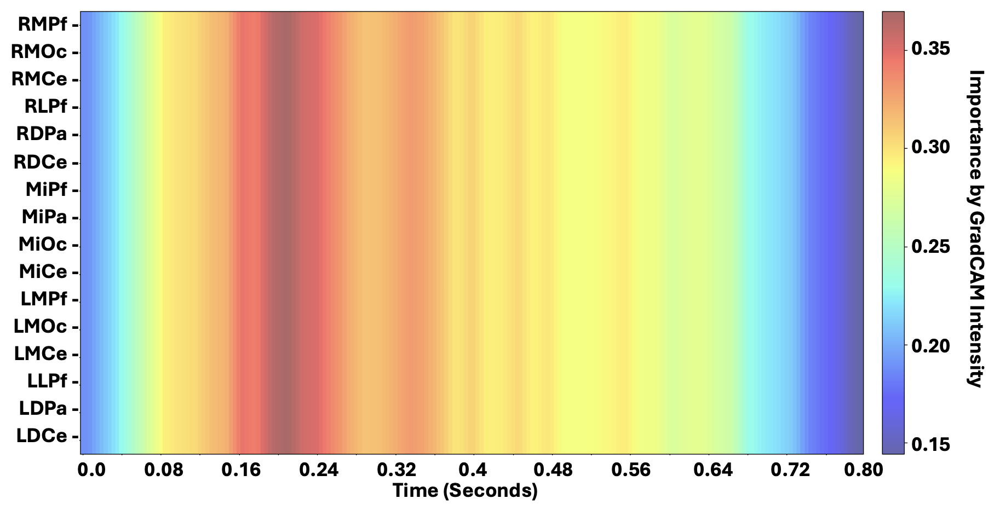
(d) EEGNet calibrated GradCAM
Mixed-label subjects are the strictest test, because within one person the model cannot lean on
subject identity. Most are difficult, but a few reached high balanced accuracy after calibration —
Subject 15 (81.0%, EEGNet) and Subject 10 (75.1%, EEG Conformer). Their integrated-gradients maps
highlight the same electrodes as the all-discomfort-subjects maps — LDCe,
LLPf, LMPf, RDCe, MiPf — indicating that some of
the learned patterns can carry over to within-subject discomfort classification, not just
between-subject discomfort classification.
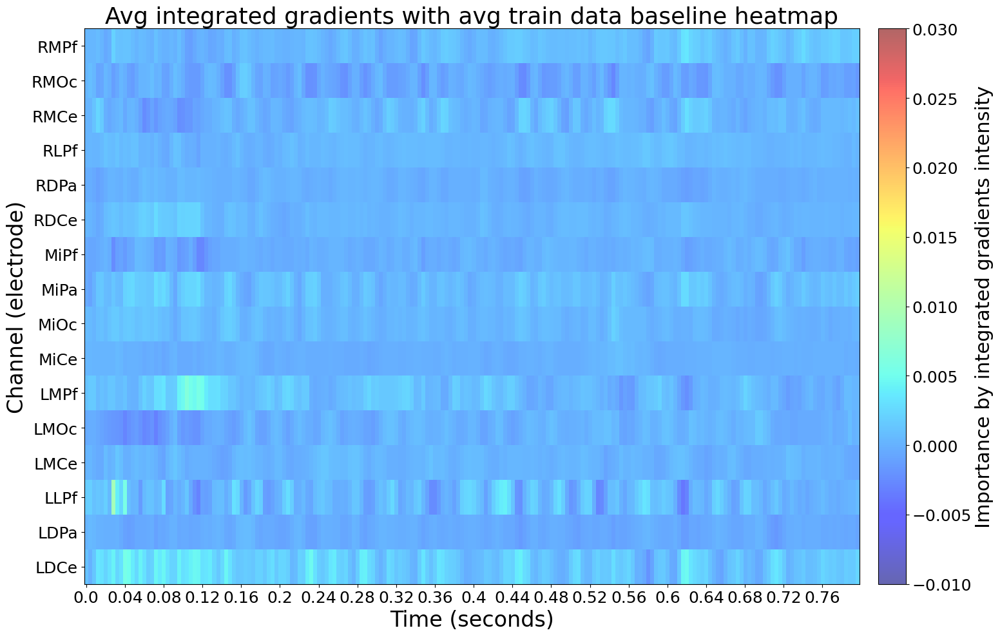
(a) Subject 15 (81.0%, EEGNet)
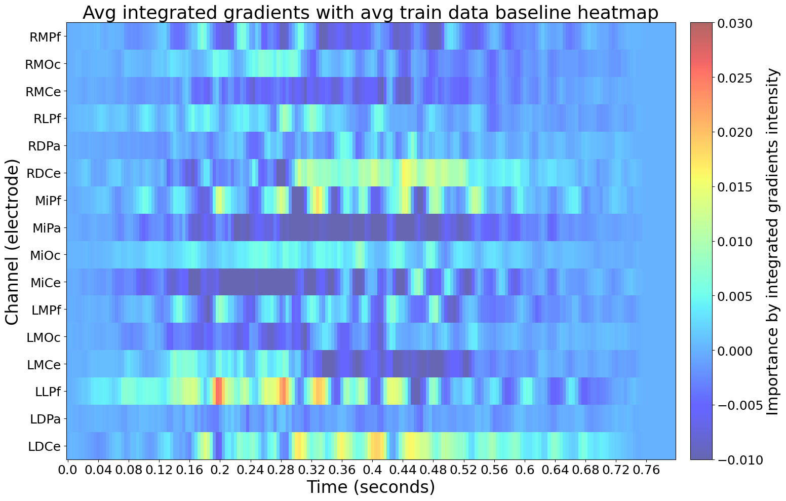
(b) Subject 10 (75.1%, EEG Conformer)
Result 2 · Cross-dataset verification on VectionVR
The pattern reappears in an independent dataset
VectionVR is an independent auditory ERP cybersickness study — different participants (n=36), VR stimulus, EEG system, and electrode montage (a modified 30-channel 10–20 layout), with one SSQ rating per subject. Base leave-one-subject-out accuracy is even harder here (the labels are coarser), and subject-specific calibration again lifts accuracy substantially; because every subject carries a single label, VectionVR tests whether the pattern generalizes, not within-subject classification.
| Model | High base | High calib | Low base | Low calib | Overall base | Overall calib |
|---|---|---|---|---|---|---|
| EEGNet | 49.9 ± 6.1 | 76.1 ± 4.6 | 52.9 ± 2.1 | 73.1 ± 3.7 | 51.6 ± 1.4 | 74.4 ± 1.4 |
| EEG Conformer | 68.2 ± 5.3 | 88.6 ± 1.6 | 33.6 ± 1.8 | 82.6 ± 2.0 | 48.0 ± 2.0 | 85.1 ± 0.8 |
| ViT (spatial order) | 47.0 ± 4.1 | 89.9 ± 0.8 | 50.5 ± 3.4 | 92.6 ± 1.4 | 49.0 ± 3.3 | 91.5 ± 0.6 |
The verification is in the attribution maps. For the high-discomfort group,
central and left centerline areas (C3, T7, CPz) were most
useful; for the low-discomfort group, left frontal (Fp1,
F7) and right parietal (P2, P4, P8) areas led —
mirroring the ERPVR discomfort group's left frontal (LLPf) and right parietal
(RMOc) pattern at a comparable (intermediate) discomfort level. The anchor:
LDCe in ERPVR and C3/T7 in VectionVR mark the same left side of the
head in central areas above the ears, tagged in both datasets despite entirely different
montages. In time, model importance again concentrates in early ERP windows — roughly
80–260 ms post-stimulus across both datasets — consistent with early sensory processing.
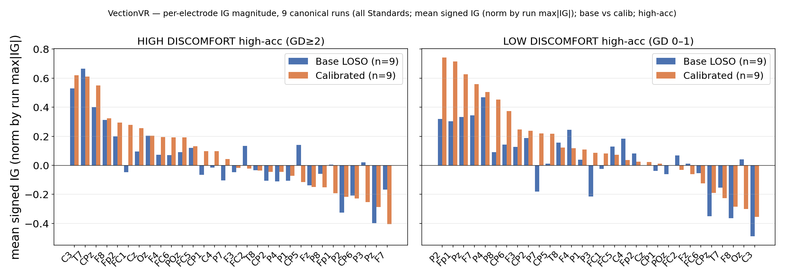
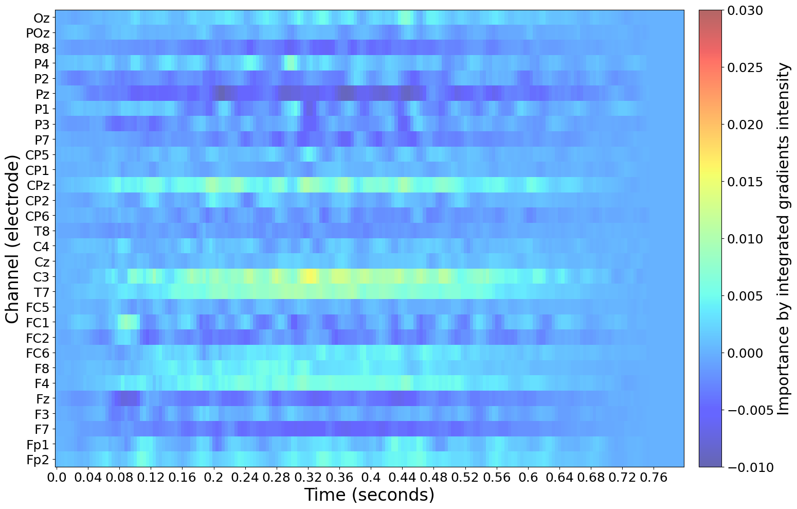
(a) EEG Conformer calibrated IGs
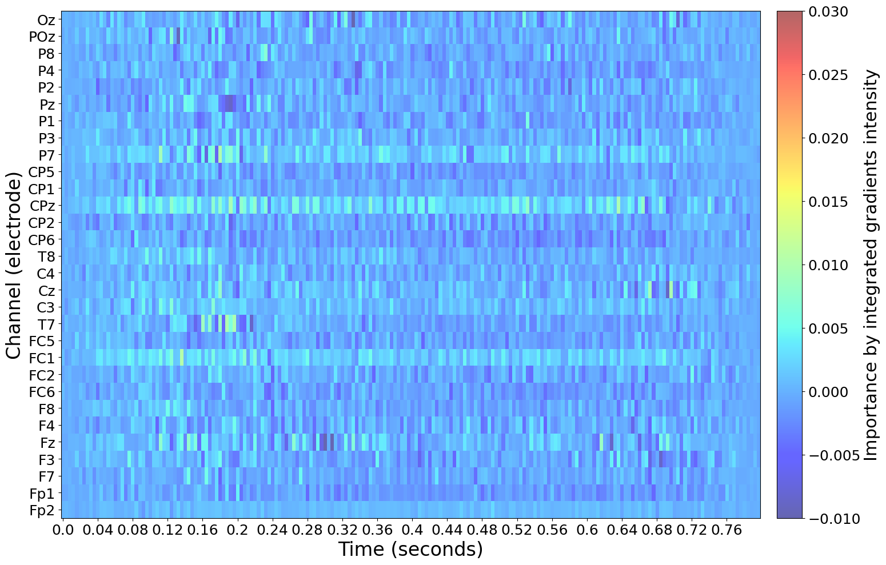
(b) Pre-trained EEG ViT calibrated IGs
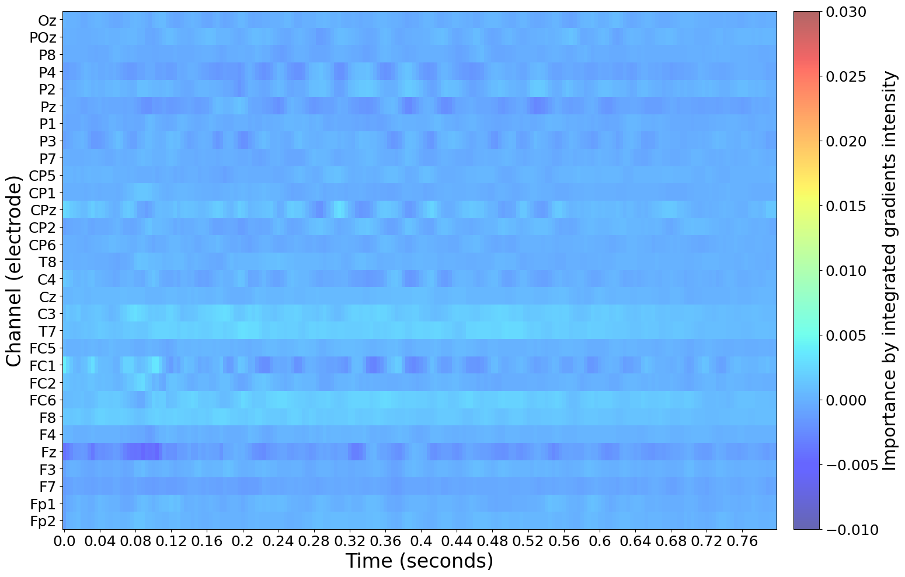
(c) EEGNet calibrated IGs
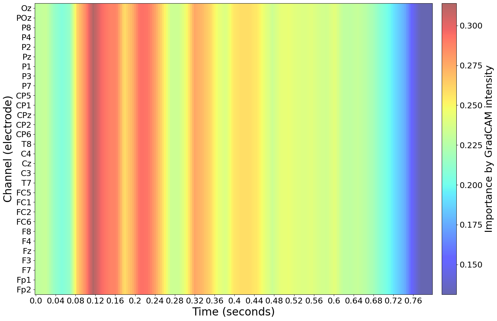
(d) EEGNet calibrated GradCAM
Datasets
Two datasets, two montages
| ERPVR (main study) | VectionVR (replication) | |
|---|---|---|
| Participants | 29 | 36 |
| Montage | 16-channel, approx. equidistant | Modified 30-channel 10–20 |
| Discomfort labels | Per block (4 SSQ ratings) | One SSQ rating per subject |
| Contribution | 120-run pattern discovery | Cross-dataset verification |
Both are auditory ERP cybersickness studies, but they differ in participants, VR stimulus, EEG system, and electrode montage — which is exactly what makes the recurrence of the same scalp locations across them meaningful.
Citation
BibTeX
@misc{yau2026uncoveringeegpatternsconsistently,
title={Uncovering EEG Patterns Consistently Associated with Cybersickness Discomfort Using Deep Learning Interpretability Maps},
author={Jacqueline Yau and Evan G. Center and Pawel Augustynowicz and Steven M. LaValle and Timo Ojala and Wenzhen Yuan and Nancy M. Amato and Pawel Strozak and Minje Kim and Kara D. Federmeier and Katherine J. Mimnaugh},
year={2026},
eprint={2512.20620},
archivePrefix={arXiv},
primaryClass={cs.HC},
url={https://arxiv.org/abs/2512.20620},
}References
- Lawhern, V.J., Solon, A.J., Waytowich, N.R., Gordon, S.M., Hung, C.P., Lance, B.J.: EEGNet: a compact convolutional neural network for EEG-based brain–computer interfaces. Journal of Neural Engineering 15(5), 056013 (2018). doi:10.1088/1741-2552/aace8c
- Song, Y., Zheng, Q., Liu, B., Gao, X.: EEG Conformer: convolutional transformer for EEG decoding and visualization. IEEE Transactions on Neural Systems and Rehabilitation Engineering 31, 710–719 (2023). doi:10.1109/TNSRE.2022.3230250
- Yang, R., Modesitt, E.: ViT2EEG: leveraging hybrid pretrained vision transformers for EEG data. arXiv preprint (2023). arXiv:2308.00454
- Sundararajan, M., Taly, A., Yan, Q.: Axiomatic attribution for deep networks. In: International Conference on Machine Learning, PMLR 70, pp. 3319–3328 (2017). proceedings.mlr.press/v70/sundararajan17a
- Mimnaugh, K.J., Center, E.G., Suomalainen, M., Becerra, I., Lozano, E., Murrieta-Cid, R., Ojala, T., LaValle, S.M., Federmeier, K.D.: Virtual reality sickness reduces attention during immersive experiences. IEEE Transactions on Visualization and Computer Graphics 29(11), 4394–4404 (2023). doi:10.1109/TVCG.2023.3320222